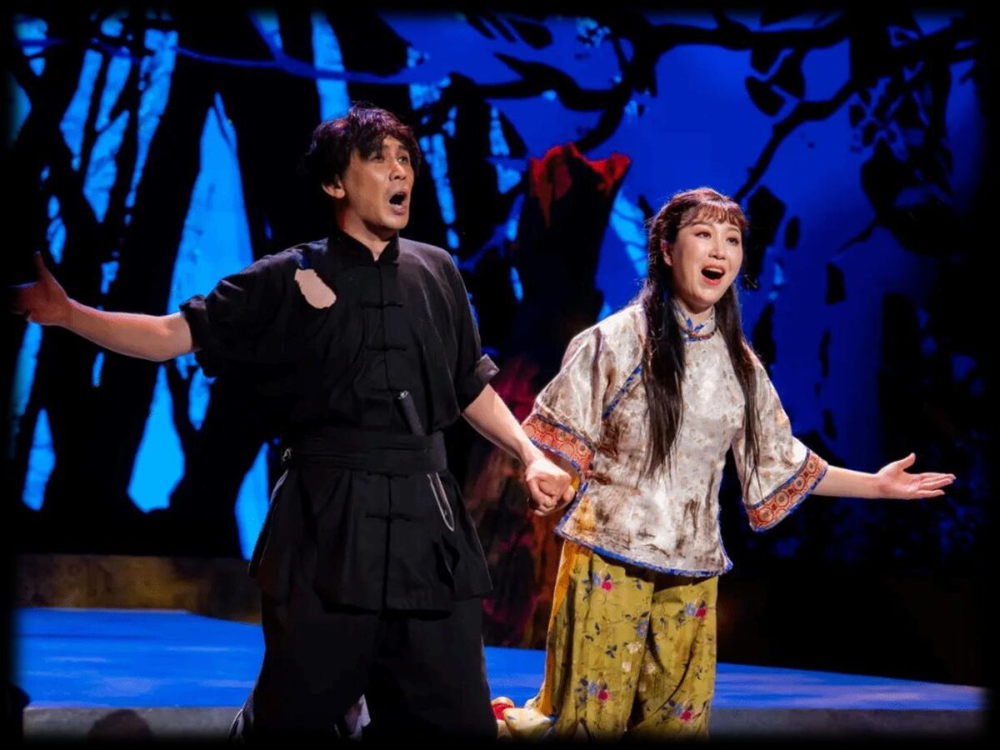
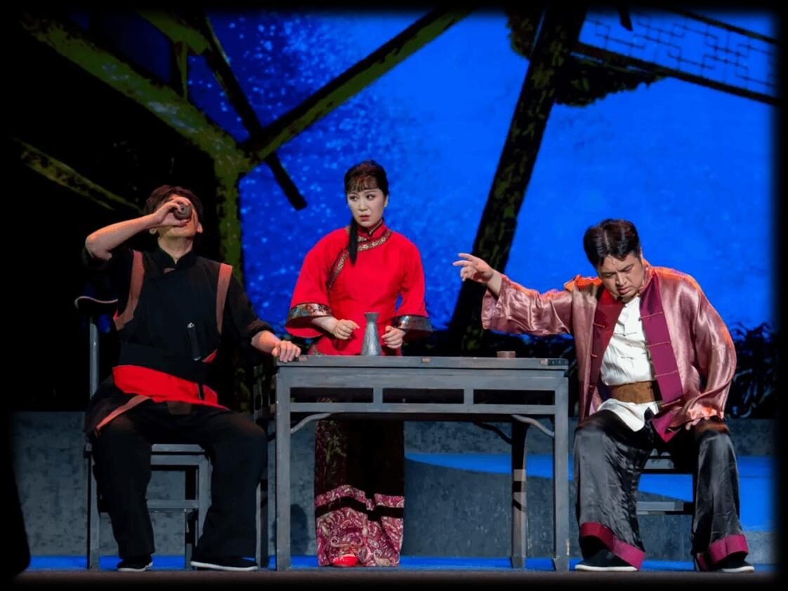
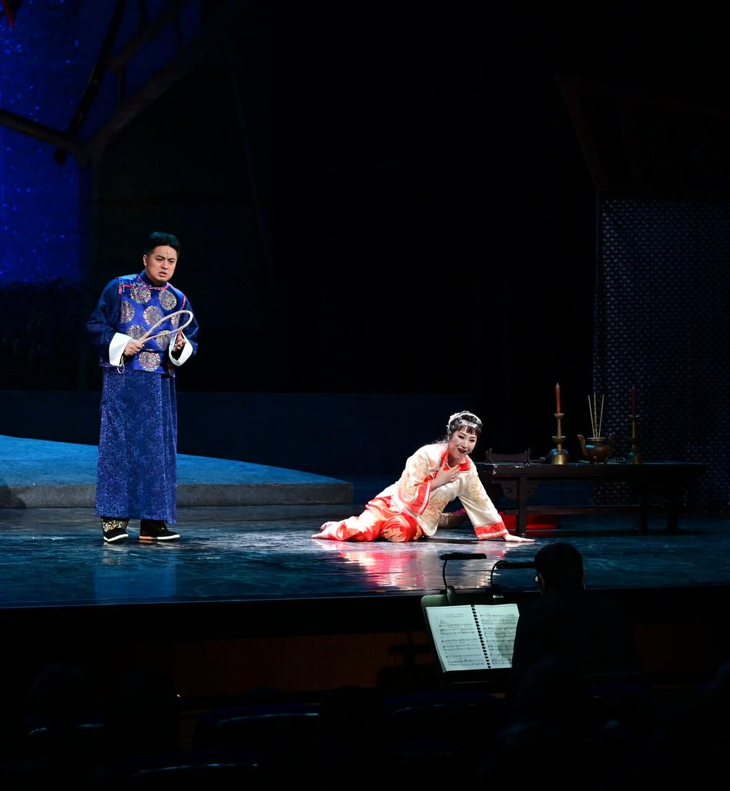
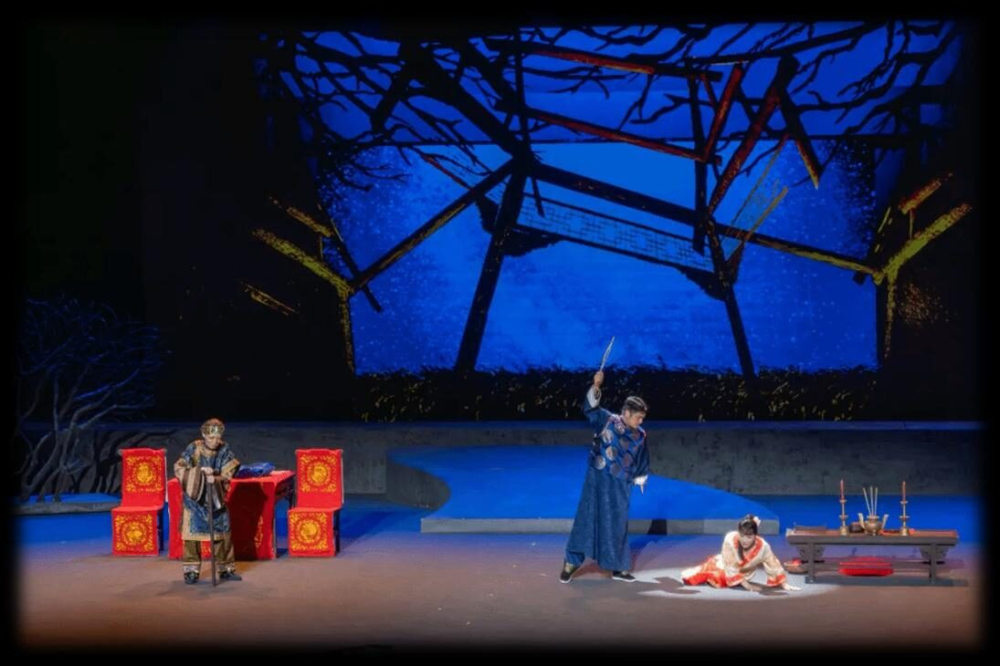
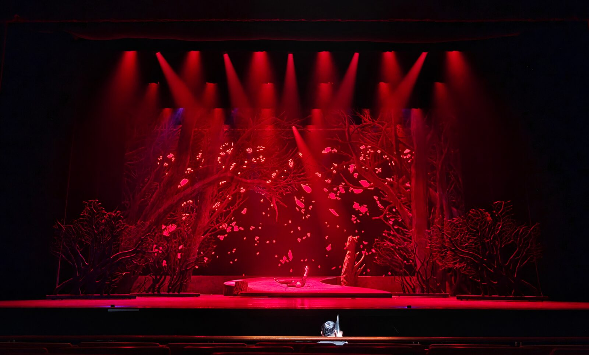

仇虎
Qiu Hu
Baritone
"Angry Tiger." Returns from prison driven by vengeance, only to discover his beloved bound to his enemy's son.
A landmark of Chinese opera — a tragedy of love, vengeance and fate that fuses the dramatic power of Western grand opera with the soul of Chinese music.

Premiered in 1987, The Savage Land (原野, Yuányě) has captivated audiences for nearly four decades. Composer Jin Xiang's score synthesises the lyricism of Puccini and Verdi with traditional Chinese musical elements, creating a uniquely moving auditory experience — a bridge connecting two distinct cultural worlds.

The story centers on Qiu Hu — "Angry Tiger" — a man consumed by vengeance after eight years in prison for a crime he did not commit. He escapes to find his enemy already dead, but his beloved, Jinzi ("Golden Flower"), now married to the enemy's son, Jiao Daxing.
Trapped in a loveless marriage and tormented by a domineering mother-in-law, Jinzi's passion is rekindled by Qiu Hu's return. The three are drawn into a dangerous love triangle, set against the backdrop of a bitter, long-running family feud.
As tensions escalate, a series of tragic events unfold — murder, accidental death and a final flight into the savage land. In one last act of sacrifice, Qiu Hu sends Jinzi to safety before taking his own life, so that their forbidden love might survive through a new generation.

"Angry Tiger." Returns from prison driven by vengeance, only to discover his beloved bound to his enemy's son.

"Golden Flower." Trapped in a loveless marriage, her passion is reignited by Qiu Hu's return — the spark that ignites tragedy.

Jinzi's husband and son of Qiu Hu's late enemy — a man caught between filial duty and a marriage without love.

The blind matriarch — domineering, suspicious, and the dark engine that drives the household toward catastrophe.
Beneath blood-red blossoms, Qiu Hu escapes from the labour camp. The savage land receives him — both as refuge and as omen.

In the rural homestead where time has stopped, Jinzi waits. The walls remember a feud the living can no longer name.

Around the table, three lives entangle. A reunion that should have been salvation becomes the first turn of the wheel.

The matriarch's grip tightens. Old wounds reopen, and what cannot be said in daylight is whispered to the dark.

Murder, accidental death and flight. The lovers run into the savage land where the trees themselves seem to mourn.

In a final act of love, Qiu Hu sends Jinzi to safety. Their forbidden love survives — carried forward by a new generation.
Widely regarded as China's most important modern playwright — often compared to Shakespeare. His The Wilderness (原野) is celebrated for its psychological depth and social critique.
Cao Yu's daughter and a celebrated writer in her own right, Wan Fang brings a uniquely intimate perspective — condensing her father's text into a libretto faithful to its spirit.
A life of struggle infused his music with extraordinary emotional power. His score echoes Puccini's lyricism while weaving in Chinese folk traditions — a singular, individual creation.
A visionary director renowned for visually stunning, emotionally resonant productions that bring the opera's intense psychological drama to vivid life on stage.
China's opera "The Savage Land"… one of the most important events in the history of world opera since the 20th century.
The New York Times Chief Classical Music Critic
"The Savage Land" will become the first step for a Chinese opera to take its place in the international repertoire.
The Christian Science Monitor Paulette Haupt, Conductor